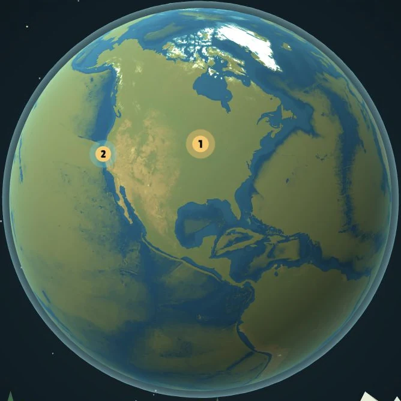

All map selection and gameplay run inside Unity. Arrow keys rotate the globe; plus and minus zoom. In the landscape, B opens projects, Tab cycles sites, Enter queues a proposal and E reviews the year. Question mark opens controls and accessibility settings.

Opening your world…